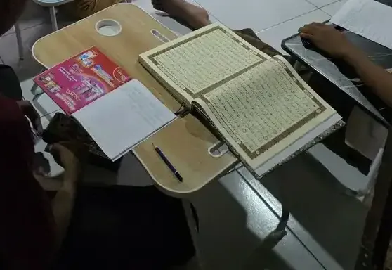
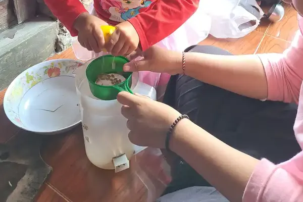
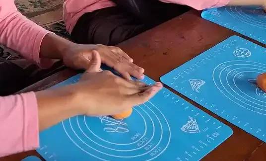
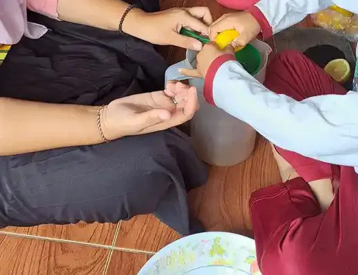

Jawaban singkat: cara mengatur waktu tidur anak autis dimulai dari hal yang paling sederhana dan paling konsisten: jam tidur dan jam bangun yang sama setiap hari, rutinitas malam yang urutannya jelas (lebih baik lagi bila dibantu jadwal bergambar), kamar yang nyaman bagi indra anak, dan layar yang dimatikan sebelum tidur. Pedoman American Academy of Neurology (2020) menyebut strategi perilaku seperti ini sebagai langkah pertama penanganan gangguan tidur pada anak autis. Bila setelah beberapa minggu tidur anak belum membaik, atau ada tanda seperti mendengkur keras, henti napas saat tidur, atau kejang, segera konsultasikan ke dokter anak.
Sebelum membaca
Artikel ini adalah panduan edukasi untuk orang tua, guru, dan pendamping. Isinya bukan pengganti pemeriksaan dokter. Setiap anak autis berbeda, jadi pilih strategi yang cocok dengan kemampuan dan kebutuhan anak Anda. Untuk obat atau suplemen tidur apa pun, termasuk melatonin, keputusan selalu ada di tangan dokter anak yang memeriksa anak secara langsung.
Daftar Isi
- Kenapa anak autis sering sulit tidur
- Berapa lama anak perlu tidur
- Langkah 1: catat pola tidur anak
- Langkah 2: tetapkan jam tidur dan jam bangun
- Langkah 3: rutinitas malam dengan jadwal visual
- Langkah 4: kamar yang ramah bagi indra anak
- Langkah 5: atur layar dan cahaya
- Langkah 6: kegiatan siang, makan, dan minum
- Langkah 7: teknik perilaku bertahap
- Kalau anak sering terbangun malam
- Soal melatonin dan obat tidur
- Kapan harus ke tenaga kesehatan
- Jangan lupa tidur orang tua
- Pertanyaan yang sering diajukan
Kenapa anak autis sering sulit tidur
Kalau Anda merasa hanya keluarga Anda yang bergulat dengan jam tidur anak, Anda tidak sendirian. Pedoman praktik American Academy of Neurology (Williams Buckley dkk., 2020) mencatat bahwa antara 44% dan 83% anak dan remaja dengan gangguan spektrum autisme mengalami gangguan tidur. Masalahnya beragam: sulit memulai tidur, sering terbangun dan lama terjaga di malam hari, pola tidur dan bangun yang tidak teratur, durasi tidur yang pendek, dan bangun terlalu pagi. Pedoman yang sama juga menyebut bahwa pada anak tanpa autisme masalah tidur cenderung berkurang seiring bertambahnya usia, sedangkan pada anak autis masalah tidur sering menetap.
Tinjauan Souders dkk. (2017) di Current Psychiatry Reports memperkirakan sekitar dua pertiga anak autis mengalami insomnia kronis. Dalam tinjauan itu, insomnia pada anak didefinisikan sebagai waktu yang dibutuhkan untuk tertidur lebih dari 30 menit per malam secara rata-rata, dan/atau sering terbangun lama di malam hari, disertai gangguan fungsi di siang hari.
Penyebabnya jarang tunggal. National Autistic Society (Inggris) merangkum beberapa alasan yang sering ditemui pada anak autis:
- Sulit menenangkan diri dan "turun mesin" menjelang tidur, atau kecemasan yang membuat anak tidak bisa rileks.
- Anak tidak menangkap isyarat sosial bahwa orang lain di rumah sudah bersiap tidur, sehingga tidak merasa perlu tidur juga.
- Pengeluaran hormon tidur melatonin yang tidak teratur, atau jam biologis tubuh yang berbeda dari kebanyakan anak.
- Perbedaan sensori, misalnya lebih peka terhadap cahaya biru dari layar, atau terhadap suara tertentu yang mengganggu.
- Kondisi saraf seperti epilepsi, serta rasa tidak nyaman di perut atau kepekaan terhadap kafein dan zat perangsang lain.
Pedoman American Academy of Neurology menambahkan bahwa anak autis lebih berisiko memiliki kondisi penyerta yang ikut mengganggu tidur, seperti henti napas saat tidur (sleep apnea), epilepsi, gangguan pencernaan termasuk refluks asam lambung, kecemasan, dan ADHD. Beberapa obat yang sering dipakai anak juga bisa mengganggu pola tidur. Karena itu, langkah-langkah di rumah sebaiknya berjalan bersamaan dengan pemeriksaan dokter bila ada tanda-tanda medis. Bila anak Anda juga didiagnosis ADHD, panduan kami tentang gangguan tidur anak ADHD bisa melengkapi artikel ini. Pengertian dasar autisme kami bahas di autisme adalah.

Berapa lama anak perlu tidur
Sebelum mengatur jadwal, tentukan dulu target yang wajar. CDC merangkum kebutuhan tidur harian per usia berdasarkan rekomendasi American Academy of Sleep Medicine (AASM). Angka ini berlaku untuk anak pada umumnya, termasuk anak autis. Anggap sebagai rentang acuan, bukan angka mati: yang lebih penting adalah anak tampak cukup segar di siang hari.
| Kelompok usia | Usia | Total tidur per 24 jam |
|---|---|---|
| Balita | 1 sampai 2 tahun | 11 sampai 14 jam (termasuk tidur siang) |
| Prasekolah | 3 sampai 5 tahun | 10 sampai 13 jam (termasuk tidur siang) |
| Usia sekolah | 6 sampai 12 tahun | 9 sampai 12 jam |
| Remaja | 13 sampai 17 tahun | 8 sampai 10 jam |
Cara memakai tabel ini sederhana. Hitung mundur dari jam bangun yang diperlukan. Misalnya anak usia 8 tahun harus bangun pukul 05.30 untuk salat Subuh dan bersiap sekolah. Dengan kebutuhan 9 sampai 12 jam, target tertidur paling lambat sekitar pukul 20.30. Artinya rutinitas malam perlu dimulai kira-kira 30 sampai 45 menit sebelumnya.
Langkah 1: catat pola tidur anak
Langkah pertama yang sering dilewatkan justru yang paling berguna: buku catatan tidur. National Autistic Society menyarankan catatan tidur untuk menemukan pola yang tidak biasa dan faktor yang memengaruhi tidur anak, sekaligus untuk menilai apakah strategi yang Anda coba benar-benar berhasil. Catatan ini juga sangat membantu saat Anda berkonsultasi, karena dokter atau psikolog bisa melihat gambaran nyata, bukan sekadar ingatan orang tua yang lelah. Tinjauan Rana dkk. (2021) juga menyebut catatan harian tidur sebagai salah satu cara utama menilai gangguan tidur pada anak autis, karena banyak anak belum bisa menceritakan sendiri apa yang mereka alami.
Catat setiap hari selama satu sampai dua minggu, sebelum mengubah apa pun. Isi yang disarankan:
| Kolom | Contoh isi | Kenapa penting |
|---|---|---|
| Jam mulai rutinitas malam | 19.45 | Melihat apakah rutinitas mulai di jam yang sama |
| Jam masuk kamar dan jam tertidur | 20.15, tertidur 21.10 | Menghitung berapa lama anak butuh untuk tertidur |
| Terbangun malam | 01.30, terjaga 40 menit | Melihat pola bangun malam dan apa yang terjadi |
| Jam bangun pagi | 05.30 | Menilai total jam tidur |
| Tidur siang | 13.00 sampai 14.30 | Tidur siang yang terlalu sore bisa menggeser jam tidur malam |
| Catatan hari itu | Hari ujian, makan malam pukul 20.00, menonton video | Menemukan pemicu seperti cemas, layar, atau makan terlalu malam |
Setelah satu sampai dua minggu, Anda biasanya mulai melihat pola. Mungkin anak selalu sulit tidur pada hari ia terlambat tidur siang, atau selalu terbangun di malam setelah hari yang sangat ramai. Pola inilah yang menjadi dasar langkah berikutnya.
Langkah 2: tetapkan jam tidur dan jam bangun
Tubuh belajar mengantuk pada jam yang sama bila jamnya memang selalu sama. Panduan kebiasaan tidur sehat dari AASM menyarankan jadwal tidur yang konsisten, termasuk bangun pada jam yang sama setiap hari, bahkan saat akhir pekan dan liburan. Tabel intervensi perilaku dalam tinjauan Rana dkk. (2021) juga mencantumkan jam tidur dan jam bangun yang mirip setiap hari sebagai inti kebiasaan tidur yang sehat, ditambah menghindari tidur siang yang terlalu dekat dengan jam tidur malam.
Beberapa hal praktis yang bisa Anda terapkan:
- Kunci jam bangun dulu. Jam bangun yang tetap biasanya lebih mudah dipegang daripada jam tidur. Bila anak tidur larut, tetap bangunkan pada jam yang sama. Rasa kantuk malam berikutnya akan membantu.
- Jaga akhir pekan. Selisih jam bangun yang besar antara hari sekolah dan hari libur membuat jam biologis anak "berpindah zona waktu" setiap minggu.
- Atur tidur siang. Untuk anak yang masih tidur siang, usahakan selesai tidak terlalu sore. Tinjauan Rana dkk. menyebut sebaiknya tidak ada tidur siang dalam empat jam sebelum jam tidur malam.
- Ubah bertahap. Bila jam tidur anak saat ini jauh dari target, majukan sedikit demi sedikit, misalnya 15 menit setiap beberapa hari, alih-alih langsung memaksanya tidur dua jam lebih awal.
Untuk keluarga Muslim, waktu salat bisa menjadi jangkar yang sangat membantu. Rutinitas setelah Isya, misalnya, bisa menjadi tanda tetap bahwa hari sudah menuju waktu tidur.
Langkah 3: rutinitas malam dengan jadwal visual
Banyak anak autis merasa lebih aman bila tahu persis apa yang akan terjadi berikutnya. National Autistic Society menyarankan rutinitas malam yang sederhana dan teratur, yang bisa diikuti di mana saja, dan memakai jadwal visual agar lebih mudah diikuti. Rutinitas ini juga bisa dibantu dengan cerita sosial (social story) yang menjelaskan kenapa kita perlu tidur dan menenangkan anak bahwa ia aman saat tidur sendiri.
Souders dkk. (2017) menjelaskan bahwa jaringan klinik autisme Autism Treatment Network (ATN) di Amerika Serikat menyusun Sleep Tool Kit untuk orang tua. Isinya meliputi kebiasaan tidur sehat, strategi perilaku dasar, jadwal visual untuk mengajarkan rutinitas tidur beserta gambarnya, penggunaan "kartu izin keluar kamar" (bedtime pass), dan tips tidur untuk anak dengan kemampuan bicara terbatas. Menurut tinjauan itu, jalur penanganan ATN dan tool kit tersebut menjadi standar layanan untuk mengenali dan menangani insomnia pada anak autis.
Contoh urutan rutinitas malam yang bisa Anda sesuaikan:
- Makan malam selesai, lalu kegiatan tenang bersama (bukan permainan yang memacu).
- Salat Isya bersama atau kegiatan keluarga yang sama setiap malam.
- Mandi atau cuci muka, sikat gigi, buang air kecil.
- Ganti baju tidur yang nyaman.
- Satu kegiatan menenangkan di kamar: membaca buku bergambar, mendengar bacaan doa, atau pijatan ringan.
- Lampu diredupkan, ucapan selamat tidur dengan kalimat yang sama setiap malam.
Tempel urutan ini dalam bentuk gambar di dinding kamar atau kamar mandi. Biarkan anak memindahkan atau mencentang kartu setiap kali satu langkah selesai, karena itu memberi rasa selesai yang jelas. Panduan lengkap membuat kartunya ada di cara membuat jadwal visual untuk anak autis dan jadwal visual anak autis. Bila pagi hari juga sering kacau, prinsip yang sama bisa dipakai untuk rutinitas pagi anak autis.

Langkah 4: kamar yang ramah bagi indra anak
Banyak anak autis memiliki perbedaan sensori yang membuat mereka lebih sulit rileks, tertidur, dan tetap tidur. Lingkungan kamar ikut berperan. Saran National Autistic Society untuk membuat kamar lebih nyaman antara lain:
- Menghalangi cahaya dengan tirai tebal atau tirai gelap.
- Mengurangi suara: menutup pintu rapat, mematikan peralatan yang berbunyi, dan menjauhkan tempat tidur dari dinding yang bersebelahan dengan ruangan ramai. Sebagian anak terbantu dengan penyumbat telinga atau mendengarkan musik lewat headphone.
- Melepas label di sprei dan baju tidur, atau mencoba bahan kain lain bila anak terganggu oleh tekstur tertentu.
- Mengurangi bau yang masuk ke kamar, atau memakai aroma yang menurut anak menenangkan.
- Menyingkirkan gangguan seperti perangkat elektronik di dekat tempat tidur dan gambar ramai di dinding.
Tinjauan Rana dkk. merangkum lingkungan tidur yang dianjurkan sebagai gelap, sejuk, tenang, tidak merangsang, dengan perangkat elektronik dimatikan. Di rumah tropis, "sejuk" bisa berarti kipas angin yang diarahkan tidak langsung ke tubuh anak atau ventilasi yang baik. Perhatikan juga bunyi kipas: sebagian anak justru tenang dengan bunyi yang stabil, sebagian lain terganggu.
Bagaimana dengan selimut berbeban (weighted blanket)? Pedoman American Academy of Neurology menyatakan saat ini belum ada bukti yang mendukung penggunaan rutin selimut berbeban atau kasur khusus untuk memperbaiki tidur yang terganggu. Pedoman yang sama mencatat uji klinisnya tidak menemukan efek samping serius, sehingga selimut ini bisa menjadi pilihan nonobat yang wajar untuk sebagian anak. Jadi bila anak Anda menyukainya, tidak masalah, tetapi jangan berharap selimut itu menyelesaikan masalah tidur sendirian. Pertimbangan serupa untuk rompi berbeban kami bahas di weighted vest anak autis, dan kebutuhan sensori secara umum di sensori integrasi.
Langkah 5: atur layar dan cahaya
National Autistic Society menyebut ada penelitian yang menunjukkan cahaya terang dari layar televisi, komputer, tablet, dan ponsel dapat menghambat produksi hormon tidur melatonin, sehingga orang tua bisa mempertimbangkan mengurangi waktu layar anak sebelum tidur. Panduan AASM menyarankan membatasi paparan cahaya terang di malam hari dan mematikan perangkat elektronik setidaknya 30 menit sebelum tidur.
Bagi anak yang sangat terikat dengan gawai, mematikan layar secara mendadak bisa memicu ledakan emosi. Beberapa cara yang lebih halus:
- Masukkan "layar selesai" sebagai satu kartu di jadwal visual, sehingga anak tahu sejak awal kapan waktunya.
- Pakai pengatur waktu yang bisa dilihat anak, dan beri peringatan 10 menit serta 5 menit sebelum layar mati.
- Siapkan kegiatan pengganti yang disukai anak, misalnya buku bergambar atau mainan sensori yang tenang.
- Simpan gawai di luar kamar tidur pada malam hari, termasuk gawai orang tua bila anak tidur sekamar.
Pembahasan lebih luas tentang batasan layar ada di screen time untuk anak autis. Bila transisi dari layar sering berujung tantrum, strategi di cara mengatasi tantrum anak autis dapat membantu.
Langkah 6: kegiatan siang, makan, dan minum
Tidur malam yang baik sering dimulai sejak pagi. Panduan AASM menganjurkan olahraga teratur, tidak makan besar menjelang tidur (camilan ringan dan sehat boleh bila lapar), dan menghindari kafein pada sore dan malam hari. National Autistic Society menambahkan agar orang tua membatasi makanan manis, minuman bersoda, dan zat perangsang lain, terutama menjelang tidur. Untuk anak Indonesia, perhatikan juga teh manis, kopi susu, minuman cokelat, dan minuman bersoda yang kadang diberikan di sore hari.
Gerak badan di siang hari juga penting. Dalam contoh kasus yang dibahas Souders dkk. (2017), tim menambahkan olahraga ke rutinitas harian anak yang suka mencari gerakan, seperti latihan merangkak dan berjalan dengan tangan, agar kebutuhan geraknya terpenuhi di siang hari. Ide kegiatan gerak yang aman di rumah bisa Anda lihat di terapi integrasi sensorik di rumah. Usahakan kegiatan fisik yang berat selesai beberapa jam sebelum tidur, lalu beralih ke kegiatan yang lebih tenang menjelang malam.
Bila anak sering sakit perut, sembelit, atau tampak tidak nyaman setelah makan, National Autistic Society menyarankan berkonsultasi ke dokter atau ahli gizi, dan tidak melakukan perubahan pola makan besar tanpa saran ahli gizi agar asupan anak tetap seimbang. Untuk anak yang pilih-pilih makanan, lihat juga cara mengatasi picky eater anak autis.

Langkah 7: teknik perilaku bertahap
Bila langkah 1 sampai 6 sudah dijalankan konsisten tetapi anak masih sulit tidur, ada beberapa teknik perilaku yang lebih terarah. Pedoman American Academy of Neurology menyatakan dokter sebaiknya membekali orang tua dengan strategi kebiasaan tidur dan strategi perilaku sebagai pendekatan lini pertama. Studi Malow dkk. (2014) di Journal of Autism and Developmental Disorders pada 80 anak autis usia 2 sampai 10 tahun menemukan bahwa edukasi tidur untuk orang tua, yang diberikan dalam beberapa sesi saja, berkaitan dengan waktu tertidur yang lebih singkat, dan hasilnya tidak berbeda antara edukasi kelompok dan edukasi perorangan.
Tinjauan Rana dkk. (2021) merangkum teknik perilaku yang umum dipakai untuk insomnia pada anak autis. Berikut ringkasannya:
| Teknik | Cara kerjanya | Catatan untuk orang tua |
|---|---|---|
| Faded bedtime (jam tidur dimundurkan lalu dimajukan bertahap) | Jam tidur awalnya disamakan dengan jam anak biasanya benar-benar tertidur, lalu dimajukan sedikit demi sedikit sampai mencapai target | Tujuannya agar kasur identik dengan mengantuk, bukan dengan berjam-jam terjaga |
| Extinction bertahap (mengabaikan terencana) | Perilaku seperti menangis atau rewel saat tidur tidak diberi respons berlebihan, sesuai rencana | Sebaiknya dirancang bersama psikolog atau terapis, terutama bila anak mudah sangat tertekan |
| Stimulus fading (orang tua menjauh bertahap) | Orang tua yang biasa menemani di kasur pindah ke kursi di samping kasur, lalu makin jauh, sampai keluar kamar | Cocok untuk anak yang hanya bisa tidur bila ditemani |
| Keterampilan menenangkan diri | Anak belajar cara menenangkan diri saat terbangun malam | Latih di siang hari dulu, misalnya napas pelan atau memeluk boneka favorit |
| Penjadwalan ulang jam biologis (chronotherapy) | Jam tidur dan bangun digeser bertahap untuk mengatur ulang jam biologis | Perlu pendampingan tenaga kesehatan |
Souders dkk. (2017) menjelaskan teknik faded bedtime dengan sederhana: anak baru dibawa ke kasur ketika sudah benar-benar mengantuk, supaya rasa kantuk melekat dengan kamar tidur. Untuk teknik yang membuat anak menangis atau sangat tertekan, mintalah bimbingan psikolog klinis atau terapis perilaku. Mereka dapat menyesuaikan teknik dengan kemampuan komunikasi anak dan tingkat kecemasannya. Sistem hadiah yang sederhana, misalnya stiker setiap pagi bila anak tetap di kamarnya, juga bisa dipakai. Prinsipnya kami bahas di reward system untuk anak autis.
Kalau anak sering terbangun malam
Terbangun malam adalah salah satu keluhan yang paling melelahkan bagi orang tua. National Autistic Society menyebut menghadapi masalah bangun malam bisa membutuhkan penenangan yang konsisten dan cara yang kreatif sesuai kebutuhan anak. Beberapa prinsip yang bisa dipegang:
- Respons yang sama setiap kali. Pakai kalimat pendek yang sama, suara pelan, lampu tetap redup, dan antar anak kembali ke kasurnya.
- Jangan jadikan malam waktu bermain. Hindari menyalakan televisi, memberi gawai, atau mengajak bermain, karena itu bisa membuat bangun malam terasa menyenangkan.
- Periksa kebutuhan dasar. Apakah anak kepanasan, haus, perlu ke kamar mandi, atau terganggu suara dari luar? Catat di buku catatan tidur.
- Siapkan kamar yang aman. National Autistic Society menyarankan membuat kamar anak aman agar orang tua bisa tidur dengan tenang tanpa khawatir anak melukai diri saat terbangun.
Bila anak terbangun dengan napas tersengal, mendengkur sangat keras, gerakan kaki yang terus-menerus, atau gerakan menyentak yang mirip kejang, jangan hanya mengandalkan strategi perilaku. Ini tanda untuk segera ke dokter.
Soal melatonin dan obat tidur
Banyak orang tua bertanya tentang melatonin karena mudah ditemukan di toko daring. National Autistic Society menjelaskan melatonin adalah hormon alami yang diproduksi tubuh saat gelap untuk membantu tidur, dan di Inggris melatonin sintetis untuk anak hanya tersedia dengan resep dokter. Pedoman American Academy of Neurology menempatkan strategi perilaku sebagai langkah pertama. Melatonin baru dipertimbangkan oleh dokter bila strategi perilaku belum membantu dan kondisi penyerta serta obat lain yang dipakai anak sudah ditangani. Pedoman itu juga meminta dokter menjelaskan kemungkinan efek samping dan kurangnya data keamanan jangka panjang.
Karena itu, jangan memberikan melatonin, obat tidur, antihistamin, atau suplemen apa pun untuk membuat anak tidur tanpa resep dan pengawasan dokter anak. Konsultasikan ke dokter anak, yang akan menilai apakah obat memang diperlukan, jenis apa yang tepat, dan bagaimana memantaunya. Artikel ini sengaja tidak mencantumkan takaran karena keputusan itu sepenuhnya wewenang dokter yang memeriksa anak Anda.
Kapan harus ke tenaga kesehatan
Jalur penanganan insomnia yang disusun ATN dan dimuat di Pediatrics (Malow dkk., 2012) menekankan bahwa evaluasi insomnia harus memperhatikan faktor medis yang bisa memengaruhi tidur, termasuk kondisi saraf dan gangguan tidur lain, karena menanganinya bisa memperbaiki insomnia. Jalur itu juga meminta adanya tindak lanjut setelah setiap penanganan untuk menilai hasilnya. Segera bawa anak ke dokter bila Anda melihat:
- Mendengkur keras hampir setiap malam, jeda napas saat tidur, atau napas tersengal.
- Gerakan menyentak, kaku, atau kejang saat tidur, atau anak bangun dengan bingung yang tidak biasa.
- Tanda nyeri atau tidak nyaman: sering memegang perut, muntah, sembelit berat, atau gatal di malam hari.
- Anak sangat mengantuk di siang hari, sering tertidur di kelas, atau perilakunya memburuk tajam.
- Masalah tidur yang berat dan tetap tidak membaik setelah beberapa minggu menjalankan rutinitas secara konsisten.
- Orang tua sudah sangat kelelahan sampai sulit menjalankan kegiatan sehari-hari.
Anda bisa memulai dari Puskesmas atau dokter spesialis anak, lalu dirujuk sesuai kebutuhan, misalnya ke dokter spesialis anak konsultan tumbuh kembang, dokter spesialis saraf anak, dokter THT bila dicurigai sumbatan napas, atau psikolog klinis untuk strategi perilaku dan kecemasan. Pastikan tenaga kesehatan yang Anda datangi memiliki izin praktik. Bawa catatan tidur dua minggu terakhir, karena itu mempercepat penilaian. Bila anak cemas berlebihan menjelang tidur, panduan kami tentang gangguan kecemasan anak bisa membantu Anda mengenali tandanya. Kunjungan ke tenaga kesehatan juga bisa disiapkan dengan prinsip yang sama seperti di cara membawa anak autis ke dokter gigi.

Jangan lupa tidur orang tua
National Autistic Society mengingatkan bahwa masalah tidur anak autis juga sering mengganggu tidur orang tuanya, padahal tidur yang cukup sangat penting bagi orang tua. Setelah berhasil menenangkan anak, orang tua kadang justru terlalu tegang untuk tidur. Beberapa hal yang bisa dicoba: bergantian berjaga malam dengan pasangan atau anggota keluarga lain, meminta bantuan keluarga besar sesekali, dan mencari dukungan dari luar keluarga seperti dokter, sekolah, atau komunitas orang tua. Rutinitas tidur anak hanya bisa dijalankan konsisten bila orang tuanya juga punya tenaga. Tips mengelola beban ini ada di mengelola stres orang tua anak ABK dan tips mendampingi anak autis.
Ingat juga bahwa perubahan kebiasaan tidur jarang berhasil dalam semalam. Pilih satu atau dua langkah dulu, jalankan konsisten setidaknya dua minggu, lihat catatan tidurnya, lalu tambahkan langkah berikutnya. Bila anak bersekolah, ceritakan rencana ini kepada guru atau pendamping agar mereka bisa melaporkan bila anak tampak sangat mengantuk di kelas.
Pertanyaan yang sering diajukan
Berapa persen anak autis yang mengalami gangguan tidur?
Pedoman American Academy of Neurology (2020) mencatat 44% sampai 83% anak dan remaja dengan gangguan spektrum autisme mengalami gangguan tidur. Tinjauan Souders dkk. (2017) memperkirakan sekitar dua pertiga anak autis mengalami insomnia kronis. Masalah tidur pada anak autis juga lebih sering menetap seiring bertambahnya usia.
Jam berapa sebaiknya anak autis tidur?
Tidak ada satu jam yang sama untuk semua anak. Hitung mundur dari jam bangun dengan memakai kebutuhan tidur per usia dari CDC dan AASM, misalnya 9 sampai 12 jam untuk usia 6 sampai 12 tahun. Anak usia sekolah yang bangun pukul 05.30 idealnya tertidur paling lambat sekitar pukul 20.30.
Apa langkah pertama mengatasi anak autis yang susah tidur?
Mulailah dengan catatan tidur selama satu sampai dua minggu, lalu tetapkan jam tidur dan jam bangun yang sama setiap hari serta rutinitas malam yang teratur. Pedoman American Academy of Neurology menyebut strategi kebiasaan tidur dan strategi perilaku sebagai pendekatan lini pertama.
Apakah jadwal visual membantu anak autis tidur?
Banyak keluarga terbantu. National Autistic Society menyarankan rutinitas malam yang teratur dengan jadwal visual agar mudah diikuti, dan Sleep Tool Kit dari Autism Treatment Network memuat jadwal visual untuk mengajarkan rutinitas tidur, seperti dijelaskan Souders dkk. (2017).
Bolehkah memberi melatonin pada anak autis yang susah tidur?
Jangan memberikan melatonin atau obat tidur apa pun tanpa resep dan pengawasan dokter anak. Pedoman American Academy of Neurology menempatkan strategi perilaku sebagai langkah pertama, dan melatonin hanya dipertimbangkan dokter bila strategi itu belum membantu serta kondisi penyerta sudah ditangani. Konsultasikan ke dokter anak.
Apakah selimut berbeban (weighted blanket) efektif untuk tidur anak autis?
Pedoman American Academy of Neurology menyatakan belum ada bukti yang mendukung penggunaan rutin selimut berbeban untuk memperbaiki tidur. Uji klinisnya tidak menemukan efek samping serius, sehingga selimut ini bisa menjadi pilihan nonobat yang wajar untuk sebagian anak yang menyukainya.
Apakah layar gawai memengaruhi tidur anak autis?
Bisa. National Autistic Society menyebut cahaya terang dari layar dapat menghambat produksi hormon tidur melatonin, dan panduan AASM menyarankan perangkat elektronik dimatikan setidaknya 30 menit sebelum tidur. Masukkan waktu layar selesai ke jadwal visual agar transisinya tidak mendadak.
Kapan anak autis yang susah tidur harus dibawa ke dokter?
Segera ke dokter bila anak mendengkur keras atau ada jeda napas saat tidur, ada gerakan seperti kejang, tampak kesakitan atau tidak nyaman di malam hari, sangat mengantuk di siang hari, atau masalah tidurnya berat dan tidak membaik setelah beberapa minggu rutinitas dijalankan konsisten.
Berapa lama sampai rutinitas tidur baru terlihat hasilnya?
Setiap anak berbeda. Jalankan satu atau dua perubahan secara konsisten setidaknya dua minggu sambil mengisi catatan tidur, lalu nilai hasilnya. Jalur penanganan Autism Treatment Network (Malow dkk., 2012) juga menekankan tindak lanjut setelah setiap penanganan untuk menilai apakah berhasil.
Bacaan Terkait
Tentang artikel ini
- Ditulis oleh: Tim YUKA (Yayasan Ukhuwah Kaffah Amanatullah), pengelola Sekolah Inklusi Taruna Imani, Sleman, Yogyakarta.
- Dasar rujukan: pedoman praktik American Academy of Neurology, sleepeducation.org (American Academy of Sleep Medicine), cdc.gov, National Autistic Society (autism.org.uk), dan jurnal ilmiah yang tersedia di PubMed Central (pmc.ncbi.nlm.nih.gov). Semua rujukan ditautkan langsung di bagian sumber di bawah artikel ini.
- Terbit: 11 Oktober 2026. Pembaruan terakhir: 11 Oktober 2026.
- Status tinjauan medis: artikel ini disusun oleh tim pendidik, belum ditinjau oleh tenaga kesehatan berizin. Tinjauan oleh tenaga kesehatan berkredensial sedang kami siapkan dan status ini akan diperbarui di halaman ini begitu selesai. Alur tinjauan dan koreksi dijelaskan di Kebijakan Editorial YUKA. Untuk gangguan tidur yang berat, obat, atau suplemen tidur apa pun, rujuklah pada dokter anak atau tenaga kesehatan lain yang memiliki izin praktik.
- Kebijakan koreksi: jika Anda menemukan klaim yang keliru atau sumber yang tidak cocok, beri tahu kami lewat halaman kontak. Kami memperbaiki isinya dan mencantumkan catatan koreksi secara terbuka.
Sumber dan Referensi
- Williams Buckley A dkk. (2020). Practice guideline: Treatment for insomnia and disrupted sleep behavior in children and adolescents with autism spectrum disorder. Neurology, American Academy of Neurology (PMC7238942)
- Malow BA dkk. (2012). A Practice Pathway for the Identification, Evaluation, and Management of Insomnia in Children and Adolescents With Autism Spectrum Disorders. Pediatrics (PMC9923883)
- Malow BA dkk. (2014). Parent-Based Sleep Education for Children with Autism Spectrum Disorders. Journal of Autism and Developmental Disorders (PMC3818449)
- Souders MC dkk. (2017). Sleep in Children with Autism Spectrum Disorder. Current Psychiatry Reports (PMC5846201)
- Rana M dkk. (2021). The Assessment and Treatment of Sleep Abnormalities in Children and Adolescents with Autism Spectrum Disorder: A Review. Journal of the Canadian Academy of Child and Adolescent Psychiatry (PMC7837521)
- National Autistic Society: Sleep and autism, a guide for parents and families
- American Academy of Sleep Medicine (Sleep Education): Healthy Sleep Habits
- CDC: About Sleep (kebutuhan tidur per usia, rekomendasi AASM)
Catatan: Artikel ini bersifat edukasi umum dan bukan pengganti diagnosis atau saran dokter anak dan tenaga kesehatan berizin. Artikel ini tidak memuat takaran obat atau suplemen apa pun. Sumber diperiksa pada 11 Oktober 2026.